Next: Heat and momentum fluxes Up: Air-Sea interaction Previous: Wrapper for air-sea fluxes Contents
INTERFACE:
subroutine kondo(sst,airt,u10,v10,precip,evap,taux,tauy,qe,qh)DESCRIPTION:
Based on the model sea surface temperature, the wind vector
at 10 m height, the air pressure at 2 m, the dry air
temperature and the air pressure at 2 m, and the relative
humidity (either directly given or recalculated from the
wet bulb or the dew point temperature),
this routine first computes the transfer coefficients for the surface
momentum flux vector,
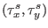 ( ),
the latent heat flux, 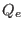, ()
and the sensible heat flux, ,
() heat flux according to the Kondo (1975)
bulk formulae. Afterwards, these fluxes are calculated according
to the following formulae:
),
the latent heat flux, 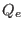, ()
and the sensible heat flux, ,
() heat flux according to the Kondo (1975)
bulk formulae. Afterwards, these fluxes are calculated according
to the following formulae:
| 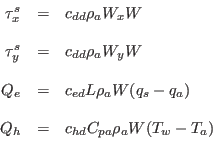 | (231) |
with the air density 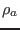, the wind speed at 10 m,  ,
the
,
the  - and the
- and the  -component of the wind velocity vector,
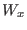 and 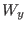, respectively, the specific evaporation heat of sea water,
-component of the wind velocity vector,
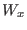 and 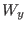, respectively, the specific evaporation heat of sea water,
 , the specific saturation humidity, 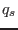, the actual
specific humidity 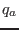, the specific heat capacity of air at constant
pressure, , the sea surface temperature, 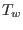 and the
dry air temperature, 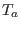.
, the specific saturation humidity, 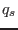, the actual
specific humidity 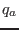, the specific heat capacity of air at constant
pressure, , the sea surface temperature, 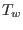 and the
dry air temperature, 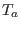.
USES:
use airsea_variables, only: kelvin,const06,rgas,rho_0 use airsea_variables, only: qs,qa,rhoa use airsea_variables, only: cpa,cpw use airsea, only: rain_impact,calc_evaporation IMPLICIT NONEINPUT PARAMETERS:
REALTYPE, intent(in) :: sst,airt,u10,v10,precipINPUT/OUTPUT PARAMETERS:
REALTYPE, intent(inout) :: evapOUTPUT PARAMETERS:
REALTYPE, intent(out) :: taux,tauy,qe,qhREVISION HISTORY:
Original author(s): Hans Burchard and Karsten BoldingLOCAL VARIABLES:
REALTYPE :: w,L REALTYPE :: s,s0 REALTYPE :: ae_d,be_d,pe_d REALTYPE :: ae_h,be_h,ce_h,pe_h REALTYPE :: ae_e,be_e,ce_e,pe_e REALTYPE :: x,x1,x2,x3 REALTYPE :: ta,ta_k,tw,tw_k REALTYPE :: cdd,chd,ced REALTYPE :: tmp,rainfall,cd_rain REALTYPE, parameter :: eps=1.0e-12